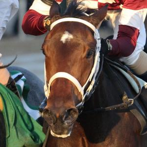

Street Band:

Street Band was foaled on February 2, 2016. Her sire is Istan and her dam is Street Minstrel. Her trainer is J. Larry Jones. She has 105 points and $248,000 in earnings. She has won 2 of 4 races.
Liora:
Liora was foaled on March 21, 2016. Her sire is Candy Ride and her dam is Giant Mover. Her trainer is Wayne M. Catalano. She has 71 points and $246,280 in earnings. She has won 2 of 6 races.
Chasing Yesterday:

Chasing Yesterday was foaled on February 13, 2016. Her sire is Tapit and her dam is Littleprincessemma. Her trainer is Bob Baffert. She has 60 points and $404,650 in earnings. She has won 2 of 2 races.
Serengeti Empress:

Serengeti Empress was foaled on January 30, 2016. Her sire is Alternation and her dam is Havisham. Her trainer is Thomas M. Amoss. She has 60 points and $313,270 in earnings. She has won 2 of 4 races.
Chocolate Kisses:

Chocolate Kisses was foaled on February 26, 2016. Her sire is Candy Ride and her dam is Brownie Points. Her trainer is Mark E. Casse. She has 51 points and $152,000 in earnings. She has won 2 of 5 races.